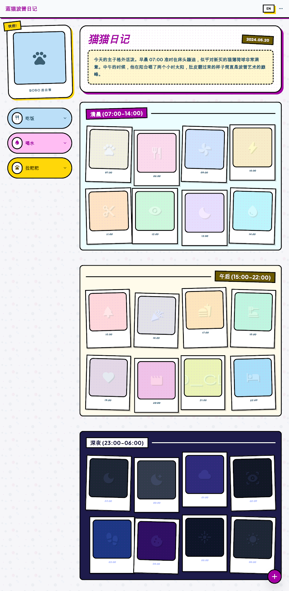
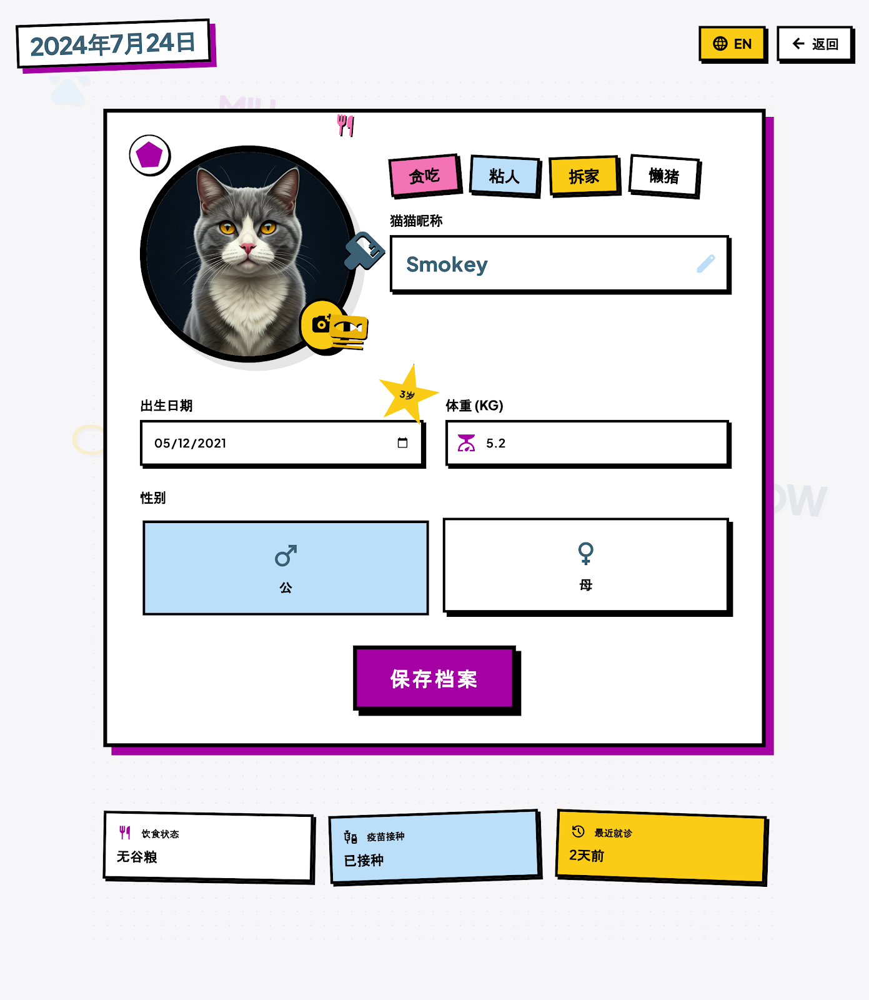

吃饭
8 次
首次 03:29，末次 21:13，累计 12分钟37秒。
Cat Daily
单日详情页

2026.04.03
吃饭
8 次
首次 03:29，末次 21:13，累计 12分钟37秒。
喝水
15 次
首次 00:35，末次 22:49，累计 8分钟31秒。
上厕所
10 次
首次 00:37，末次 22:56，累计 9分钟21秒。

00:00
巡视刚入夜后的第一段巡视先记录家里静态位置，后续会补成真实抓拍图。
01:00
待整理这一小时的巡视结果还没写入，后续由 cron 构建时补齐。
02:00
待整理这一小时的巡视结果还没写入，后续由 cron 构建时补齐。
03:00
喝水结合现有卫生间日志，这段时间里有明显的喝水行为。
04:00
待整理这一小时的巡视结果还没写入，后续由 cron 构建时补齐。
05:00
待整理这一小时的巡视结果还没写入，后续由 cron 构建时补齐。
06:00
活跃天亮前后活动开始增加，适合作为第一阶段的收尾摘要。
07:00
待整理这一小时的巡视结果还没写入，后续由 cron 构建时补齐。
08:00
待整理这一小时的巡视结果还没写入，后续由 cron 构建时补齐。
09:00
喝水上午阶段记录到饮水与短时上厕所，页面会汇总成白天时段摘要。
10:00
待整理这一小时的巡视结果还没写入，后续由 cron 构建时补齐。
11:00
待整理这一小时的巡视结果还没写入，后续由 cron 构建时补齐。
12:00
上厕所现有 CatDaily 事件流已经能提供可信的卫生间行为数据。
13:00
待整理这一小时的巡视结果还没写入，后续由 cron 构建时补齐。
14:00
待整理这一小时的巡视结果还没写入，后续由 cron 构建时补齐。

15:00
阶段更新第二次 cron 会在这个阶段结束后重建整页并对外发布。
16:00
待整理这一小时的巡视结果还没写入，后续由 cron 构建时补齐。
17:00
待整理这一小时的巡视结果还没写入，后续由 cron 构建时补齐。
18:00
吃饭这一档会优先展示晚饭、喝水以及客厅活动的组合摘要。
19:00
待整理这一小时的巡视结果还没写入，后续由 cron 构建时补齐。
20:00
待整理这一小时的巡视结果还没写入，后续由 cron 构建时补齐。
21:00
休息准备进入当天最后一个阶段，后续会生成更完整的夜间风格图。
22:00
待整理这一小时的巡视结果还没写入，后续由 cron 构建时补齐。
23:00
收尾第三次 cron 在夜间执行，用于产出当天最终版页面。